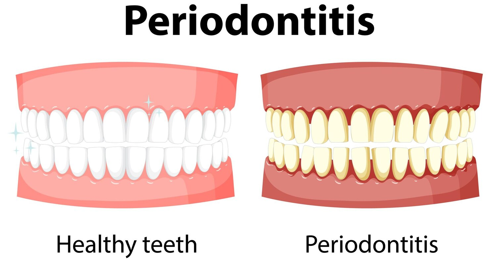
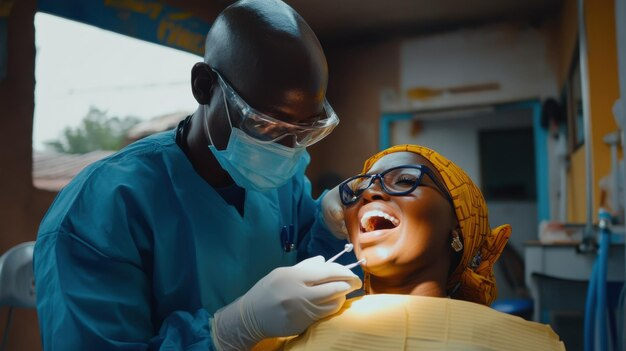

Home
Services
About Us
Booking
Contact
Our Dental Services
General Dentistry
Teeth Cleaning:
Professional cleaning to remove plaque and tartar.
Exams & Checkups:
Regular dental exams to assess oral health.
Fillings:
Restoring cavities with materials like amalgam or composite resin.
X-rays:
Diagnostic imaging to detect issues not visible to the naked eye.
Preventive Dentistry
Fluoride Treatments:
Strengthening teeth against decay.
Sealants:
Protective coatings applied to teeth to prevent cavities.
Mouthguards:
Custom-fit guards for protection during sports or to prevent teeth grinding.
Restorative Dentistry
Crowns:
Caps placed over damaged teeth to restore their shape and function.
Bridges:
Fixed prosthetics used to replace missing teeth.
Dentures:
Removable replacements for missing teeth.
Implants:
Artificial tooth roots placed in the jawbone to support crowns or bridges.
Cosmetic Dentistry
Teeth Whitening:
Procedures to lighten the color of teeth.
Veneers:
Thin shells bonded to the front of teeth to improve appearance.
Bonding:
Applying tooth-colored resin to repair imperfections.
Contouring and Reshaping:
Sculpting teeth to improve appearance.
Orthodontics
Braces:
Devices used to straighten and align teeth.
Invisalign:
Clear aligners that gradually straighten teeth.
Retainers:
Devices worn after braces to maintain tooth position.
Periodontics

Gum Disease Treatment:
Managing and treating gum infections.
Scaling and Root Planing:
Deep cleaning below the gumline to treat gum disease.
Endodontics
Root Canals:
Treatment of the inner part of the tooth to save a damaged or infected tooth.
Oral Surgery
Tooth Extractions:
Removal of damaged or non-restorable teeth.
Wisdom Teeth Removal:
Extraction of third molars, often to prevent complications.
Pediatric Dentistry
Child Dental Checkups:
Specialized exams and treatments for children.
Fluoride Treatments for Kids:
Strengthening children’s teeth.
Emergency Dentistry

Emergency Extractions:
Immediate removal of problematic teeth.
Tooth Pain Relief:
Treatment for sudden and severe tooth pain.